Frenchmen Street
Start here when the group wants live music without making Bourbon Street the entire personality of the evening.
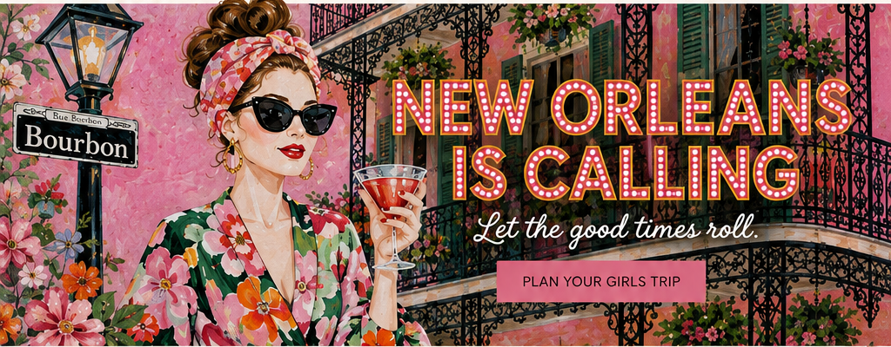
THE SHORT LIST
Curated tips for unforgettable memories
Frenchmen for the music. Bourbon for the evidence.
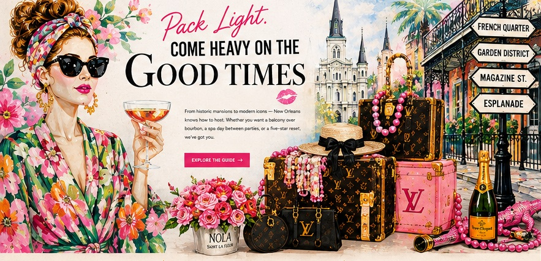
PLACES TO STAY
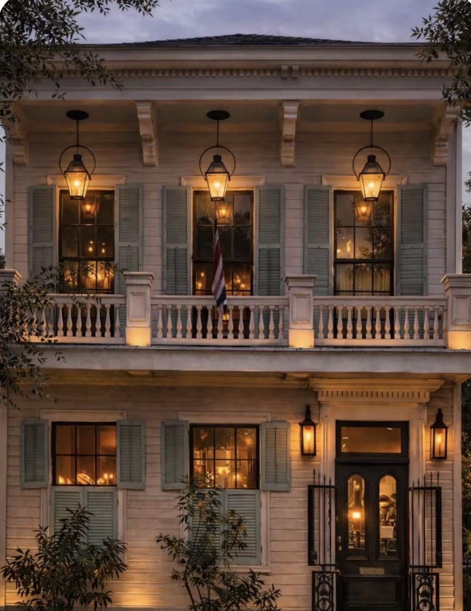
Historic Greek Revival, Parisian interiors, private balcony, and a soul you can feel. The ultimate girls-trip home base.
VIEW DETAILS →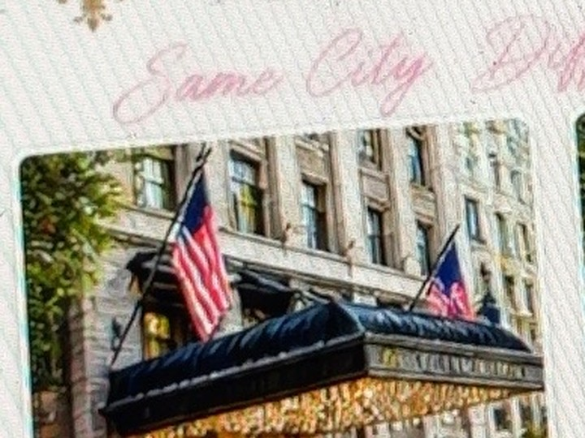
World-class service, spa, rooftop pool and riverfront views when you want five-star everything.
VIEW DETAILS →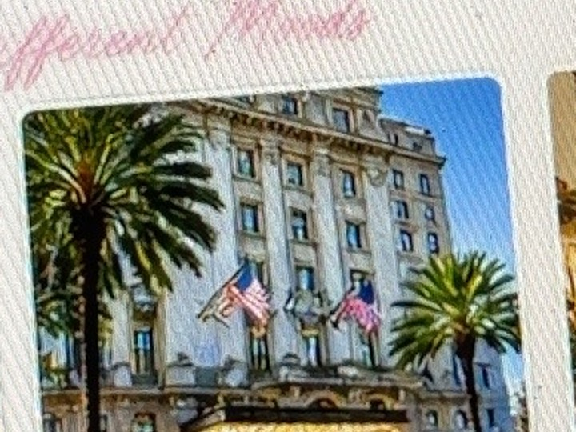
Timeless elegance, luxe suites and a serious spa — perfect for a decadent reset.
VIEW DETAILS →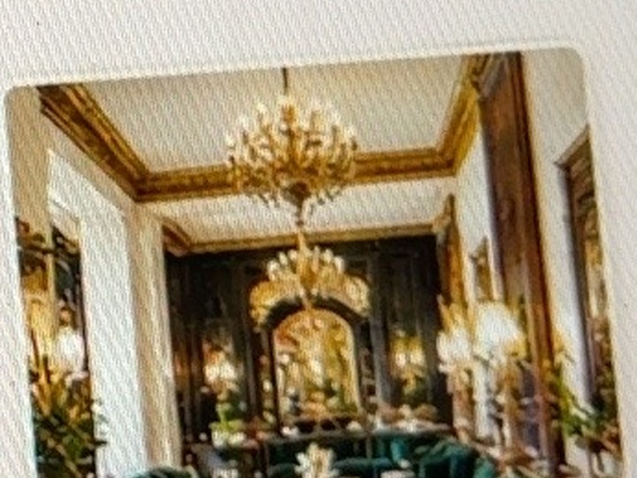
Historic, glamorous and full of character. A grand New Orleans icon just outside the Quarter.
VIEW DETAILS →Different beds. Same bad decisions. ♡
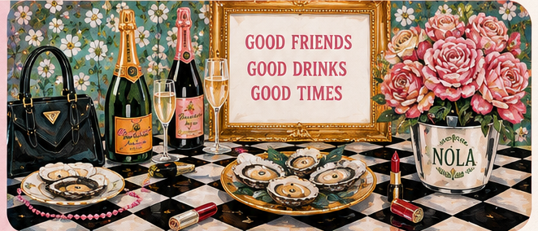
What happens in New Orleans becomes brunch conversation.
BEST RESTAURANTS FOR A NEW ORLEANS GIRLS TRIP
Our curated New Orleans restaurant recommendations span Creole institutions, destination tasting menus, seafood, sushi, steak and late-night classics. Click any original painting to visit the restaurant.
BRUNCH + DAYTIME
Hydration, but make it a French 75.
HAVE A DRINK
Raise a glass to the best bars in NOLA. Every coupe in the tower is clickable — and every glass is alive with champagne bubbles. Pick your mood and go straight to the bar.
Sip champagne. Do dangerous things. ♡
OUR FAVORITE THINGS
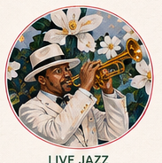
LIVE JAZZFrenchmen Street + Tipitina's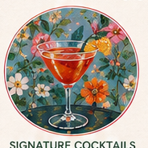
SIGNATURE COCKTAILSSazeracs, French 75s + classics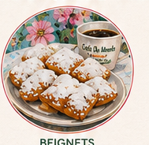
BEIGNETSPowdered sugar is an accessory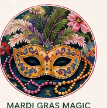
MARDI GRAS MAGICCostumes, culture + color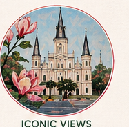
ICONIC VIEWSArchitecture worth wandering forAFTER DARK
Start here when the group wants live music without making Bourbon Street the entire personality of the evening.
Classic architecture, legendary bars, galleries, restaurants, Jackson Square, and just enough chaos when you want it.
Beautiful houses, leafy streets, Magazine Street shopping, destination restaurants, and a slower daytime rhythm.
Colorful architecture, neighborhood bars, music, cafés, and an artsier side of the city.
PLAY + EXPERIENCE
A balanced diet is a beignet in each hand.
BUILD YOUR WEEKEND
A flexible framework—not a military operation.
Settle into Maison St. LaFleur, cocktails at Columns or The Chloe, dinner at MaMou or Compère Lapin, then live music on Frenchmen Street.
Bearcat or Brennan's, shopping and architecture, afternoon Sazerac House, then a big dinner—Restaurant R'evolution, Emeril's tasting menu, Irene's, or Doris Metropolitan.
Commander’s Palace jazz brunch or 25¢ martini lunch, beignets, a streetcar ride, and one final cocktail before departure.
A FEW LOCAL TRUTHS
Over-scheduling. New Orleans is better with room for detours.
Making Bourbon Street the whole trip. Visit it, laugh, leave with your dignity mostly intact.
Bad shoes. Cobblestones and long walks do not care about your outfit.
Ignoring distance at night. Use rideshare when the route feels isolated or unfamiliar.
SHOP THE TRIP
Personalized totes, hats, tees, sweatshirts, tumblers, koozies, makeup bags, pajamas and trip-specific keepsakes.
SHOP CUSTOM MERCHTHE NON-BASIC BACHELORETTE EDIT
Start with the question your group is actually asking. Every guide is written to be useful on its own, with a New Orleans point of view—not a copy-and-paste party checklist.
WE LOVE NOLA
This guide is built for women who want the version of New Orleans that mixes beautiful interiors, serious food, live music, neighborhood character, cocktails, and just enough mischief.